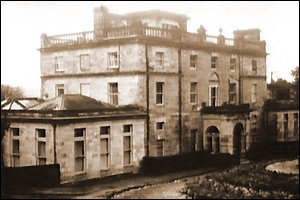

CHAPTER TWO
Saint Hill
My purpose is to bring a barbarism out of the
mud it thinks conceived it and to form, here on Earth, a civilization based on human
understanding, not violence.
That's a big purpose. A broad field. A
star-high goal.
But I think it's your purpose, too.
L. RON HUBBARD, Scientology
0-80
Ron Hubbard bought Saint Hill Manor from the Maharajah
of Jaipur in 1959. The Manor is on the edge of the hamlet of Saint Hill, a few miles from
the small Sussex town of East Grinstead, 30 miles south of London. For eight years Saint
Hill was the axis of the Scientology world, and many of Hubbard's research
"breakthroughs" were made there. Following Hubbard's departure in 1967, Saint
Hill remained a major Scientology center. I visited Saint Hill in August, 1975, to see
whether to commit myself to six months of study there.

Saint Hill Manor, a large gray-stone building set in
about 50 acres, was built by a retired soldier in the early eighteenth century. The house
has a solid military severity, largely devoid of Georgian charm. By the time I arrived,
students no longer studied in the Manor, but in the "castle," a peculiar folly
on which construction had started in the mid-1960s and which was eventually finished in
1985. The word "castle" conjures images of an imposing Norman fortress, but
Saint Hill "castle" is only a castle in the sense that it is faced with yellow
stone and has a few turrets. As castles go, it is very small, especially considering the
score of years invested in its construction. By 1975, only one single-story wing was
finished. The castle is a monstrosity; a hybrid of breeze-blocks, leaded windows and
battlements under a flat, tarmac roof. However, I was not interested in Hubbard's
architectural taste.
The place buzzed with smiling people, many in
pseudo-naval uniforms. Although I had encountered "Sea Org" members before, it
was strange seeing them en masse. At Saint Hill they wore colored lanyards and campaign
ribbons on their navy blue blazers. A religion run by sailors? I pushed the thought aside.
An attractive brunette whisked me around, carefully
avoiding the Manor, which housed the mysterious "Guardian's Office." Between the
Manor and the castle there was an encampment of huts occupied by busy Sea Org members. The
expensive canteen was also housed in a corrugated hut, as were the book-store and several
of the administrative offices. The "castle" housed the course-rooms and the
public pans of the Organization. My tour ended in the office of the "Registrars"
(the sales staff), where I was treated as royalty. I handed over what seemed to me a
fortune (some £400), borrowed only after repeated assurances that I would make money
easily after taking the Auditor training courses.
Despite my insistence that I was only visiting, I was
ushered into a course-room. Scientology has a tremendous sense of urgency, which took hold
of me. I read the "Basic Study Manual" until the evening session ended. I was
then told that a Sea Org member wanted to see me. I was surprised as it was eleven
o'clock, and I had to find my lodgings. The Sea Org member was a recruiter, who, for the
next two hours, tried to persuade me to join that group.
In 1967, Hubbard had put to sea with a group of
devoted followers, who became the "Sea Organization." I was shown photos of
Hubbard dressed up as the "Commodore." Sea Org Members signed a billion-year
contract, swearing to return life after life to fulfill "Ron's purpose." They
also staffed the four "Advanced Organizations," where the secret upper levels of
Scientology were delivered. Saint Hill was one of the four. I had heard much of this
before and had already been tempted to join the Sea Org and work at the Publications
Organization in Denmark. I saw the Sea Org as the monastic order of Scientology, something
like the Knights Templar, perhaps. I felt guilty, because I was not ready to renounce
everything for the good of the cause. I doggedly insisted that I wanted to train as an
"Auditor," and "go Clear" before deciding whether to join the Sea Org.
I was going to be a full-time student, and felt that as a trained Auditor I would be far
more useful to the Sea Org.
Eventually the recruiter showed me a
"confidential" Sea Org issue, which claimed that the governments of the world
were on the verge of collapse. The Sea Org would survive and pick up the pieces. Her
attempt to stir up a sense of impending doom failed miserably. l wanted no part of it.
Hubbard had said elsewhere that Scientology was non-political. I was interested in
Scientology as a therapy, nothing more. As a therapy I felt it might have a world-changing
impact.
Completely exasperated, the recruiter retreated into
the argument that anyone who did not join the Sea Org was insane. I was flustered, not
understanding that I was her last chance to reach her weekly quota of recruits. Moreover,
I did not know that her pay, her self-esteem and the esteem of her fellow staff members
all depended upon increasing her quota each week.
The Sea Org was a bemusing aspect of Scientology. It
was difficult to reconcile the military appearance of its members with religion or
psychotherapy. However, I was convinced that Scientology was a valid and potent therapy,
so I accepted the existence of the Sea Org.
I moved to East Grinstead in September 1975, living
with my new girlfriend in a rented room. All three bedrooms of the small house were
occupied, as was one of the two downstairs rooms. There were eight of us living there,
including a baby. The couple who ran the house rented it from another Scientologist. They
were both Sea Org members who were "living out," away from the house run by the
Scientology Church. They worked incredibly long hours (the husband from eight in the
morning to midnight Sunday to Friday, as well as Saturday afternoons). They were American,
although the 1968 use of the Aliens Act prohibited non-UK residents from studying or
working for Scientology in Great Britain. They bought their clothes from rummage sales, as
do most Sea Org members in Britain. They always looked gray and exhausted. Somehow they
managed to support their baby, though seeing little of him. In spite of it all, they were
usually cheerful.
The husband was supposedly a Clear, and had done three
levels beyond Clear. He often hinted at his psychic abilities, but excused
himself from any demonstration, in case it "overwhelmed" me. He claimed to be
able to back the right horse, which is how he spent his only free morning. Nonetheless, he
continued to live below the poverty line.
I went to Saint Hill daily and applied myself to my
studies. Scientology courses are run in a similar way to correspondence courses. The
student is given a "checksheet," which has the written materials, Hubbard tapes,
and practical work listed in strict sequence on it. The student signs off each completed
step. I sailed through the Basic Study Manual, and went onto the Hubbard Standard
Dianetics Course.
On the Dianetics Course I learned how to use the
"Hubbard Electropsychometer," or "E-meter," which shows changes in a
person's electrical resistance through movements of a needle on a dial. The person
receiving counselling holds two electrodes (in fact, empty soup cans) and the E-meter is
supposed to show changing states of mind, or the "movement of mental mass." A
"fall" or "read" (rightward needle movement) shows that a subject is
"charged." A "floating needle" is "a rhythmic sweep of the dial
at a slow, even pace." This supposedly happens when there is no emotional
"charge," or after any "charge" has been released. So areas of upset
are found with the "fall" of the needle, and their resolution is shown by a
"floating needle." 1
The E-meter is used in most auditing. Lists of
questions are checked for responses. A "floating needle" is one of the
indications that an auditing "process" or procedure is complete.
I had been given my "Original Assessment" at
Birmingham. Dianetic auditing is supposed to dig out buried memories, so it seemed
reasonable that the first step should be an E-metered questionnaire about my background.
This included questions about my relationships with everyone in my family; anyone I knew
who was antagonistic to Scientology; my education; and a complete alcohol and drug history
(including all medicines), listing every occasion of use. My Auditor asked for precise
information about emotional losses, accidents, illnesses, operations, my present physical
condition, whether I had any family history of insanity, any compulsions and repressions I
felt I was suffering from, whether I had a criminal record, and if so the details, and my
involvement with "former practices," which in my case included Zen meditation. 2
This "Original Assessment" is the beginning
of the "Preclear folder," which contains notes taken during auditing sessions.
Auditors keep a running record of the Preclear's more significant comments during each
session.
At that time, Dianetic auditing first addressed the
psychological effect of drugs. This procedure was called the Dianetic Drug Rundown, and it
followed a very exact pattern, which has changed little to this day. The Auditor reads out
the list of drugs given by the Preclear, looking for the most marked E-meter reaction. He
then asks for attitudes associated with taking that drug. If an attitude given by the
Preclear "reads" on the E-meter, the Auditor sets about "running"
Dianetics on it. 3
Having asked the Preclear to locate an incident of the
given attitude, the Auditor directs the Preclear to "move to the beginning of the
incident," and then go through it. When the E-meter shows that enough
"charge" has been released from the incident, the Preclear is directed to find
an "earlier similar incident." In theory the Preclear will at first give
conscious moments of this attitude (called "Locks"). Then he will usually run
into an Engram. The Auditor asks for earlier and earlier incidents, and the Preclear
almost invariably goes into "past lives." When the earliest Engram is found and
relieved, the Preclear is supposed to have a realization ("cognition") about its
effect upon him, "Very Good Indicators" (VGIs), which is to say a grin, and a
"floating needle." From then on, the Preclear should be free from the effects of
the Engram chain.
The whole drug list is treated painstakingly in this
way. Going through every attitude, emotion, sensation and pain associated with each drug.
Then the drug list is checked on the E-meter until nothing on it "reads" any
more. I remember Victory-V cough sweets being a persistent "item" on my drug
list. I spent hours trying to think of some attitude, emotion, sensation or pain
associated with Victory-Vs.
I was disappointed with my Dianetic auditing, because
I did not experience any real change. My back-ache and my near-sightedness remained. A few
times, inexplicably powerful images of what seemed to be "past lives" rushed
into mind. At one point, I had the very vivid sensation of being burned at the stake. But
for the most part I could not quite believe it. Not because I doubted Dianetics, but
because I felt that I was not yet capable of fully contacting my past.
After the Dianetics Course, I did several Scientology
Auditor courses. As well as receiving Dianetic auditing, the Preclear was meant to go
through eight "Release Grades" before doing the "Clearing Course," and
then the mysterious "Operating Thetan" levels. As a Scientology Auditor, I
learned how to audit the first three of these "Release Grades." These were meant
to deal with memory, communication and problems.
During this time, I had my first brush with Saint Hill
"Ethics." The "Ethics Officer" would try to resolve disputes, and to
remove any obstacles to a resolute practice of Scientology. I had arrived at Saint Hill
with the remainder of a small court fine to pay. The papers had been transferred to one
office and I had been told to deal with another, so I received a summons for non-payment.
The morning I received the summons I went to the Saint Hill "Ethics Officer," an
intense, overweight Australian, who wore knee-length boots with her dishevelled Sea Org
uniform. I requested a morning off to attend the court-hearing. She insisted I tell her
all the details. I explained that the remainder of the fine was less than £40, and that
it was all due to an administrative mix-up. I was amazed when she told me that she was
removing me from the course because I was a "criminal." She insisted that even
if a fine were the result of a parking ticket, the offender would be barred from
Scientology courses until it was paid.
Saint Hill was very different from the Birmingham
Mission where there was an easy-going attitude. The Ethics Officer there would apologise
for having to "apply Policy." At Saint Hill, the Ethics Officers were daunting,
overworked and unsmiling. Saint Hill Registrars (salesmen or, more usually, saleswomen)
were a little too sugary, and it was obvious that they wanted money. The constant and
unavoidable discussions with Sea Org recruiters at Saint Hill were wearing. Virtually
everyone there was too busy trying to save the world to create any genuine friendships.
The advantages of "going Clear" still loomed
large for me. I did not think of leaving Scientology, just going back to the friendlier
atmosphere of Birmingham - which I finally decided to do. My decision was accelerated by
continuing price rises. In November 1976, the price of Scientology auditing and training
began to rocket. Until then auditing had been £6 an hour ("co-auditing" between
students was free). My Dianetics Course had cost £125. Beginning in November 1976, the
prices were to go up at the rate of 10 percent a month, allegedly to improve
staff pay and conditions. I did not object to that goal, but I did object when the prices
continued to go up with each new month. The price rises were to continue for the next four
years.
FOOTNOTES
1. Technical Bulletins of
Dianetics & Scientology, vol. 12, p.322
2. Board Technical Bulletin,
"Preclear Assessment Sheet," 24 April 69R
3. Board Technical Bulletin,
"Drills for Auditors," 9 October 71R. |